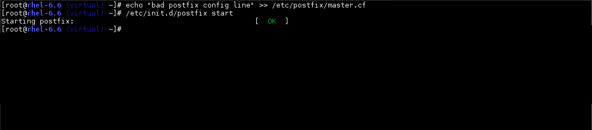
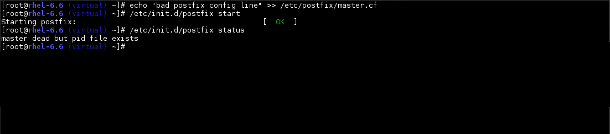
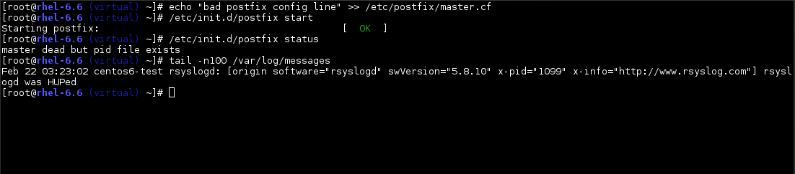
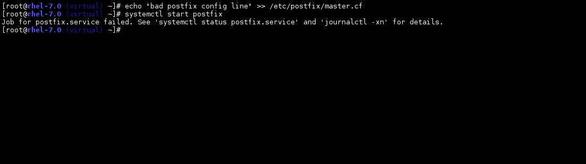
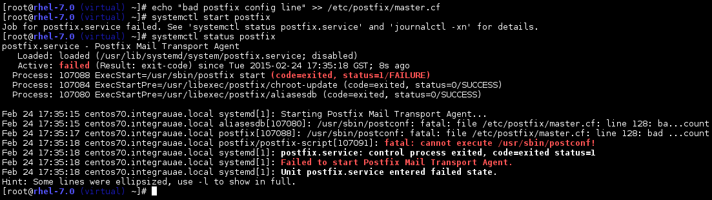

RHEL 7
What's new
by Rizvi Rahim, Integra Technologies
Enough marketing, let's get technical
XFS is the default filesystem
- No longer a paid add-on
- Supports defragmentation
- Much more scalable
Supported filesystem limits
|
EXT3 |
EXT4 |
XFS |
| Max. single file |
2TB |
16TB |
500TB |
| Max. filesystem |
16TB |
16/50TB |
500TB |
| Max. subdirectories |
32000 |
64000* |
Unlimited |
XFS caveats
- Use the "
inode64" mount option when mounting a filesystem larger than 1TB
- Be aware that you cannot shrink XFS filesystems
- Lots of tuning options available if you have lots of small files vs larger files
Systemd
- Lots of controversy, but systemd is actually a Good Thing ®
- Not something brand new introduced in RHEL7, developed for over 5 years, default since Fedora 15
- Gives a much-needed modernization boost to the Linux operating system
Systemd advantages
How RHEL 6 behaves with an error in the mail server configuration file:
Systemd advantages
How RHEL 6 behaves with an error in the mail server configuration file:

Systemd advantages
How RHEL 6 behaves with an error in the mail server configuration file:

Systemd advantages
How RHEL 6 behaves with an error in the mail server configuration file:

Systemd advantages
How RHEL 7 behaves with an error in the a mail server configuration file:
Systemd advantages
How RHEL 7 behaves with an error in the a mail server configuration file:

Systemd advantages
How RHEL 7 behaves with an error in the a mail server configuration file:

Systemd advantages
- Easier startup scripts
- Makes cgroups easily accessible (resource prioritization or limiting)
- Adds advanced features as simple configuration options, like auto-restarting services, hiding directories, etc.
- Service timeouts!
Firewalld
- New firewall management tool
- No service distruption when changing rules
- Supports different trust zones
- GUI, CLI and XML based configuration
- Will make the shift to nftables in the future easier
Firewalld
# Old: iptables -A INPUT -m state --state NEW -m tcp -p tcp \
# --dport 80 -j ACCEPT
firewall-cmd --add-service=http
firewall-cmd --zone=public --add-service=smtp
firewall-cmd --zone=public --add-port=3667/tcp
firewall-cmd --permanent --zone=public --add-rich-rule= \
"rule family="ipv4" source address="192.168.0.4/24" \
service name="http" accept"
Docker/Containers
- A new method of software packaging and development
- An app distributed via a container is self contained and isolated
- Easy to deploy, no worrying about OS apache/mysql/library versions
- Easier to scale
- No performance hit; not really virtualization
Other improvements
- "bash-completion" now in the base repo, so better autocomplete
- NetworkManager actually usable for server use, with a command line utility
- Better networking performance (supports 40G ethernet cards)
- Better iSCSI target server, LIO. Supports persistent reservations.
- Swap memory compression - better performance in low memory situations
Other improvements
- Chrony handling NTP - better time accuracy
- NUMA aware auto-scheduling and memory allocation
- Easier Windows AD integration
- Performance Co-Pilot
- ....and more
Updated applications
- PHP 5.4
- Python 2.7.5
- Apache 2.4
- MariaDB 5.5
- PostgreSQL 9.2
Tech previews
kpatch - update kernels without rebooting
BTRFS - next generation filesystem
LVM caching - use SSDs to cache HDD storage
RHEL 7 caveats
- 32-bit servers are not supported any more
- Some older servers are no longer supported, eg. HP DL380 G6 and older
- A bit of a learning curve